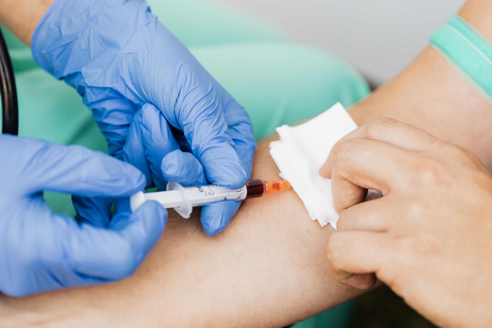

What Is a Lipid Profile Test and Why Is It Important?

- A lipid profile test is a blood test that measures cholesterol and other fats in your blood.
- The main parameters include total cholesterol, LDL cholesterol, HDL cholesterol, triglycerides, and non-HDL cholesterol.
- Most people can have a lipid profile without fasting, although fasting may be recommended in certain situations.
- Lipid profile results are compared with reference ranges, but the appropriate targets can vary depending on age and cardiovascular risk.
- Abnormal lipid levels can increase cardiovascular risk, making regular testing useful for early identification and management.
Introduction
When was the last time you checked your cholesterol? You may not think about it when you feel well, but your cholesterol levels can reveal important information about your cardiovascular health.
Cardiovascular disease (CVD) remains the leading cause of death worldwide, responsible for an estimated 19.8 million deaths in 2022, or around a third of all global deaths. High levels of LDL cholesterol and other abnormal blood lipids are among the most significant and modifiable risk factors linked to cardiovascular disease [1].
But how do you know if your cholesterol levels are healthy?
A lipid profile test. A blood test that measures the levels of different fats and cholesterol in your blood. It can help identify abnormal lipid levels, assess cardiovascular risk, and monitor people receiving treatment for lipid disorders [1].
Other common names for a lipid profile test are:
- Lipid panel
- Lipid test
- Cholesterol panel
- Coronary risk panel
- Fasting lipid panel
- Non-fasting lipid panel
The test may be performed as part of routine health screening or when you have risk factors for cardiovascular disease. Understanding what the test measures, why it's done, and what the results mean can help you have more informed conversations with your healthcare provider.
Why Is a Lipid Profile Test Done?
A lipid profile test helps assess a person's cardiovascular risk by identifying abnormal blood lipid levels. Because high cholesterol and other lipid abnormalities may not cause noticeable symptoms, testing can help identify people who may have an increased risk of heart disease and stroke [2].
The test may also be used to:
- Assess cardiovascular risk: Lipid results contribute to an overall assessment of the risk of developing atherosclerotic cardiovascular disease.
- Guide treatment decisions: The results can help healthcare professionals decide whether lifestyle changes, lipid-lowering medicines, or other measures may be appropriate.
- Monitor treatment: Repeat lipid testing can be used to assess how well treatment is controlling lipid levels.
- Monitor cardiovascular risk over time: People with a higher baseline cardiovascular risk may need lipid testing more frequently to identify changes in risk and allow treatment to be started or adjusted sooner [2,3].
How often a lipid profile should be repeated depends on factors such as a person's overall cardiovascular risk, existing health conditions, and whether they are receiving treatment [3].
What Does a Lipid Profile Measure?
A lipid profile measures different types of cholesterol and other lipids in your blood. A standard lipid profile usually includes total cholesterol, LDL cholesterol, HDL cholesterol, and triglycerides. VLDL cholesterol and non-HDL cholesterol may also be reported as part of the lipid profile. Additional tests, such as lipoprotein(a) and apolipoprotein B (ApoB), may be requested separately when needed [1,4].
Total Cholesterol
Total cholesterol is the overall amount of cholesterol carried in the blood by different types of lipoproteins. It includes cholesterol carried by both HDL (good cholesterol) and LDL (bad cholesterol) particles, as well as other lipoproteins [4].
LDL Cholesterol
This is sometimes called "bad" cholesterol. LDL carries a large amount of the cholesterol in your blood. LDL cholesterol is an important part of cardiovascular risk assessment and is commonly used to help guide lipid-lowering treatment [4]. When LDL cholesterol is too high, it can contribute to plaque buildup in the arteries, increasing the risk of heart attack and stroke.
HDL Cholesterol
High-density lipoprotein (HDL) cholesterol is often called "good" cholesterol because it helps carry excess cholesterol from the blood back to the liver, where it can be processed and removed from the body. HDL cholesterol is an important part of cardiovascular risk assessment, and lower levels are generally linked to a higher risk of cardiovascular disease [4].
Triglycerides
Triglycerides are another type of fat measured in a lipid profile. Triglycerides come from the food you eat and are also made by your body. Extra calories can be converted into triglycerides and stored for energy. They are carried in the blood mainly by lipoproteins such as chylomicrons and very-low-density lipoproteins (VLDL). Triglyceride levels can also be used when calculating LDL cholesterol [4].
Non-HDL Cholesterol
Non-HDL cholesterol is a comprehensive measure of all the cholesterol carried by lipoproteins other than HDL. It includes LDL cholesterol and cholesterol carried by other particles that can contribute to plaque buildup in the arteries. It is calculated by subtracting HDL cholesterol from total cholesterol [4].
Who Should Get a Lipid Profile Test?
Abnormal lipid levels are common, affecting around 20% to 25% of adults and children. Because they may not cause noticeable symptoms, screening can help identify people at increased risk of cardiovascular disease and start treatment when needed.
Lipid profile testing is recommended for adults as part of routine screening for abnormal cholesterol and other blood lipid levels. The 2026 ACC/AHA guideline recommends cholesterol screening from age 19, generally at least every five years for adults without known lipid disorders. More frequent testing may be recommended with increasing age or when additional cardiovascular risk factors are present [5].
You may also need to have your lipid profile checked more often if you have factors that increase your risk of cardiovascular disease, such as:
- Diabetes
- High blood pressure
- Kidney disease
- Smoking
- A family history of premature cardiovascular disease
- People with existing heart disease or a history of stroke may also need regular lipid monitoring as part of their ongoing care
- A known or suspected inherited cholesterol disorder [5]
People with a lipid disorder, existing cardiovascular disease, or those taking cholesterol-lowering medicines may need regular testing to monitor their lipid levels and response to treatment [5].
The right testing schedule depends on your age, health history, lipid levels, and overall cardiovascular risk. Adults should generally have a lipid profile at least every 5 years from age 19, with more frequent testing as they get older or if they have additional cardiovascular risk factors. Your healthcare provider can advise how often you should have a lipid profile [5].
How to Prepare for a Lipid Profile Test
Preparing for a lipid profile test is usually simple. In most cases, you do not need to fast before the test. However, your healthcare provider may recommend a fasting lipid profile in certain situations, depending on your lipid levels and why the test is being done [6].
Do You Need to Fast?
For most people, a lipid profile can be done without fasting. This is known as a non-fasting lipid profile, meaning you can have the blood sample taken at any time of the day, regardless of when you last ate. Eating may cause a small change in some lipid levels, particularly triglycerides, but it usually has little effect on the overall result [6].
If fasting is required, you may be asked to avoid food for 9–12 hours before the test. A fasting test may sometimes be recommended if non-fasting results show triglyceride levels that are very high or when your healthcare provider needs a more accurate measurement of fasting triglycerides [1].
If you have been asked to fast, follow the instructions given by your healthcare provider or laboratory. Do not assume that you need to fast unless you have been told to do so.
Before the Test
Even when fasting is not required, follow any instructions given by your healthcare provider or laboratory. Some things that can affect your lipid levels include your usual diet, physical activity, smoking, and alcohol intake [1].
You should also:
- Follow your usual routine unless you are given different instructions. Try to maintain your usual diet and physical activity before the test, as these factors can affect lipid levels [1].
- Tell your healthcare provider if you have recently been ill. Recent illnesses, such as a heart attack or an acute infection, can temporarily affect lipid levels and may influence how your results are interpreted [1].
- Tell your healthcare provider if you smoke or regularly drink alcohol. These factors can affect lipid levels, particularly triglycerides, and may be considered when interpreting your results [1].
- If you take diabetes medicines, tell your healthcare provider before fasting, as some medicines can cause low blood sugar when you do not eat.
If you are not sure whether your lipid profile requires fasting, contact your healthcare provider or laboratory before the test.
How Is a Lipid Profile Test Done?
So, what actually happens when you have a lipid profile test?
It starts with a simple blood sample, which is then analysed to measure the different lipids in your blood. The sample can be collected from a vein or, in some point-of-care testing settings, from a finger prick [7].
The test usually involves these steps:
- Blood sample collection: A healthcare professional collects a small blood sample from a vein in your arm. Some point-of-care tests may use a finger-prick sample instead. You may feel a brief pinch or discomfort when the needle is inserted. Mild bruising, soreness or slight bleeding at the site may occur afterwards and usually settles on its own [7].
- Sample testing: The blood sample is analysed to measure different lipids, including total cholesterol, triglycerides and HDL cholesterol. LDL cholesterol and non-HDL cholesterol may then be calculated and reported as part of the lipid profile [4].
- Results: The results are reported as lipid measurements and can be used by your healthcare provider to assess your cardiovascular risk and guide further management.
Understanding Lipid Profile Results
Once you receive your lipid profile results, the numbers can help show whether your cholesterol and triglyceride levels are within desirable ranges. However, these results should be interpreted alongside your overall cardiovascular risk.
Total Cholesterol
A total cholesterol level below 5.0 mmol/L (200 mg/dL) is generally considered desirable for adults. For children and teenagers aged 19 or younger, a level below 4.4 mmol/L (170 mg/dL) is desirable. Levels above this are above the desirable range and may indicate higher cardiovascular risk, particularly when other lipid levels or risk factors are also abnormal [4].
LDL Cholesterol
An LDL cholesterol level below 2.6 mmol/L (100 mg/dL) is generally considered desirable for adults, while a level below 2.8 mmol/L (110 mg/dL) is desirable for children [4].
However, the recommended LDL cholesterol level may be lower for people with a higher cardiovascular risk. For example, some people with existing cardiovascular disease who are at very high risk may need an LDL cholesterol level below 55 mg/dL (1.4 mmol/L). This means that a level within the general desirable range may still be higher than the recommended target for some people. Also, a high LDL cholesterol level can increase the risk of atherosclerotic cardiovascular disease (ASCVD) [8].
HDL Cholesterol
For adults, an HDL cholesterol level below 1.0 mmol/L (40 mg/dL) in men or 1.3 mmol/L (50 mg/dL) in women is considered low and is linked to a higher risk of heart disease. However, a higher HDL level does not rule out cardiovascular risk, especially when LDL cholesterol or other risk factors are elevated [4].
For children and teenagers, an HDL cholesterol level above 1.2 mmol/L (45 mg/dL) is within the reference range [4].
Triglycerides
A triglyceride level below 150 mg/dL, or less than 1.7 mmol/L, is considered healthy; 150 to 199 mg/dL (1.7 to 2.2 mmol/L) is borderline high, 200 to 499 mg/dL (2.3 to 5.6 mmol/L) is high, and 500 mg/dL or above (5.7 mmol/L or above) is very high.
Persistently elevated triglycerides can contribute to cardiovascular risk and may also be associated with conditions such as diabetes, obesity, and metabolic syndrome [4]. They can increase the risk of acute pancreatitis, a sudden inflammation of the pancreas.
Non-HDL Cholesterol
For adults, a non-HDL cholesterol level below 3.4 mmol/L (130 mg/dL) is generally considered desirable, while a level below 3.1 mmol/L (120 mg/dL) is desirable for children. A non-HDL cholesterol level above 4.9 mmol/L (190 mg/dL) is considered a risk-enhancing factor and may require further assessment for a cholesterol disorder [4].
Having one result outside the desirable range does not automatically mean that you have cardiovascular disease. Certain health conditions, including diabetes, an underactive thyroid and kidney disease, as well as some medicines, can also affect lipid levels and may influence your results.
Your healthcare provider will consider your results alongside factors such as your age, medical history and other cardiovascular risk factors. For people at higher cardiovascular risk, particularly those with existing cardiovascular disease, the recommended LDL-C and non-HDL-C targets may be lower than the general desirable levels above [8].
If your results are outside the desirable range, your healthcare provider will explain what they mean for your individual level of cardiovascular risk and whether further assessment or treatment is needed.
Conclusion
A lipid profile is a useful tool for understanding your cardiovascular health and identifying abnormal lipid levels that may increase your risk of heart disease and stroke. Although the test itself is simple, the results are most useful when viewed as part of your overall health and cardiovascular risk.
Regular lipid testing can help identify changes over time and support early action when levels are outside the recommended range. If your results are abnormal, your healthcare provider can help you understand what they mean for you and whether lifestyle changes, further testing, or treatment may be appropriate.
If your results are outside the recommended range, discuss them with your healthcare provider and follow the recommended next steps, whether that involves lifestyle changes, repeat testing or treatment.
FAQ
Do I need to fast for a lipid profile test?
Not usually. Most people can have a lipid profile without fasting. Your healthcare provider may recommend fasting in some situations.
How often should I have a lipid profile test?
It depends on your age, health history, cardiovascular risk and previous results. Your healthcare provider can advise how often you need testing.
Can I drink water before a lipid profile test?
Yes. Water is generally allowed before a lipid profile test. If you have been instructed to fast, follow the specific instructions given by your healthcare provider or laboratory.
Can you have high cholesterol without symptoms?
Yes. High cholesterol often doesn't cause noticeable symptoms, which is why testing matters.
What does an abnormal lipid profile result mean?
An abnormal result does not necessarily mean that you have a disease. Your healthcare provider will consider your cholesterol and triglyceride levels along with other factors, such as your age, health history, and cardiovascular risk, to decide whether you need further assessment or treatment.
References
- Solnica B, Sygitowicz G, Sitkiewicz D, et al. 2024 Guidelines of the Polish Society of Laboratory Diagnostics and the Polish Lipid Association on laboratory diagnostics of lipid metabolism disorders. Arch Med Sci. 2024;20(2):357–374. Available from: https://doi.org/10.5114/aoms/186191
- Parhofer KG, Laufs U. Lipid profile and lipoprotein(a) testing. Dtsch Arztebl Int. 2023. Available from: https://doi.org/10.3238/arztebl.m2023.0150
- Sampson M, Wolska A, Zubirán R, et al. Optimisation of time interval for the measurement of plasma lipids for cardiovascular disease risk assessment. Expert Rev Mol Diagn. 2024;24(1–2):123–133. Available from: https://doi.org/10.1080/14737159.2024.2306127
- Cao J, Donato L, El-Khoury JM, Goldberg A, Meeusen JW, Remaley AT. Correction to: ADLM guidance document on the measurement and reporting of lipids and lipoproteins. J Appl Lab Med. 2025;10(4):1085. Available from: https://doi.org/10.1093/jalm/jfaf021
- Blumenthal RS, Morris PB, Gaudino M, et al. 2026 ACC/AHA/AACVPR/ABC/ACPM/ADA/AGS/APhA/ASPC/NLA/PCNA guideline on the management of dyslipidemia: a report of the American College of Cardiology/American Heart Association Joint Committee on Clinical Practice Guidelines. Circulation. 2026;153(17):e1154–e1276. Available from: https://doi.org/10.1161/CIR.0000000000001423
- Langsted A, Nordestgaard BG. Worldwide increasing use of nonfasting rather than fasting lipid profiles. Clin Chem. 2024;70(7):911–933. Available from: https://pubmed.ncbi.nlm.nih.gov/38646857/
- Kim HN, Yoon SY. Simultaneous point-of-care testing of blood lipid profile and glucose: performance evaluation of the GCare Lipid Analyser. J Clin Lab Anal. 2021;35(12):e24055. Available from: https://doi.org/10.1002/jcla.24055
- Visseren FLJ, Mach F, Smulders YM, et al. 2021 ESC guidelines on cardiovascular disease prevention in clinical practice. Eur Heart J. 2021;42(34):3227–3337. Available from: https://doi.org/10.1093/eurheartj/ehab484
Need Content Like This for Your Next Project?
I write evidence-based health content that educates, builds trust, and gets read.
Let's Talk